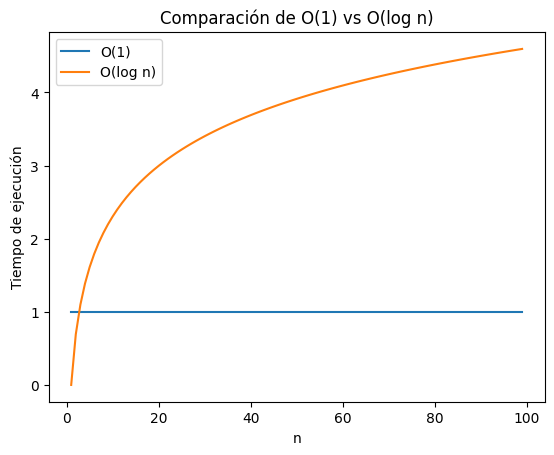
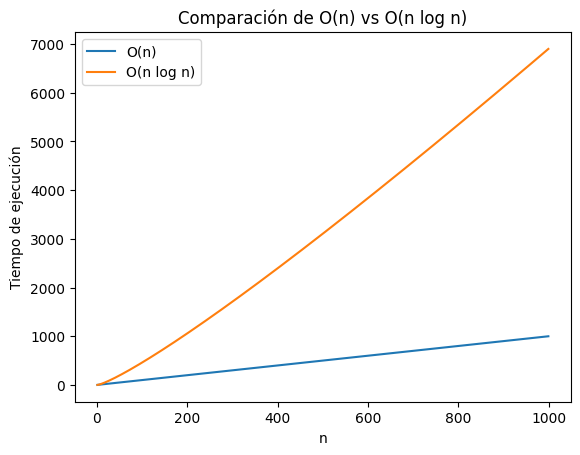
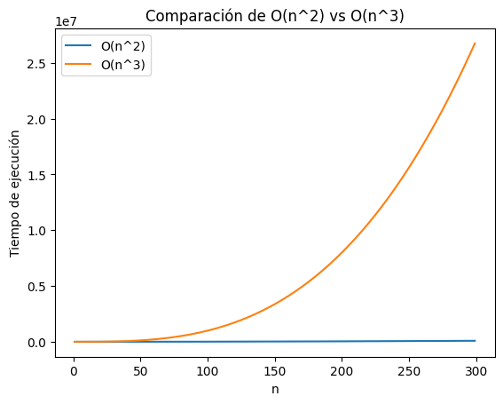
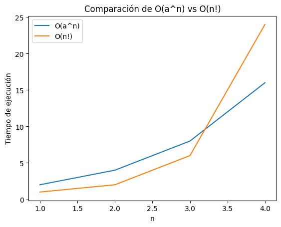
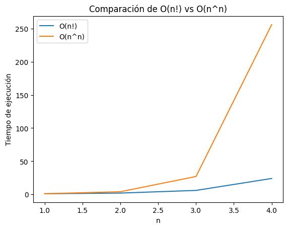

#Importamos librerias
import numpy as np
import math
import pandas as pd
import matplotlib.pyplot as plt
#Definimos las funciones
# O(1)
def O_1(n):
return 1
# O(log(n))
def O_log_n(n):
return np.log(n)
# O(n)
def O_n(n):
return n
# O(n*log(n))
def O_n_log_n(n):
return n*np.log(n)
# O(n^2)
def O_n_cuadrado(n):
return n**2
# O(n^3)
def O_n_cubo(n):
return n**3
# O(a^n)
def O_a(n,a) :
return a**n
# O(n^n)
def o_n_n(n):
return n**n
# O(n!)
def O_n_factorial(n):
return math.factorial(n)Reporte Escrito: Experimentos y análisis
Alumno: Isaac Hernández Ramírez
Introducción
Informalmente, un algoritmo es cualquier procedimiento computacional bien definido que toma algún valor o conjunto de valores, como entrada y produce algún valor, o conjunto de valores, como salida. Un algoritmo es por tanto, una secuencia de pasos computacionales que transforman la entrada en salida.(Cormen et al., 2022)
La complejidad de un algoritmo es una medida de la cantidad de recursos computacionales (como tiempo de ejecución y memoria) que necesita para completar su tarea en función del tamaño de la entrada. En otras palabras, nos dice cómo se comportará un algoritmo a medida que los datos crecen.
En este reporte, exploraremos algunos ejemplos comparativos de funciones para evidenciar las implicaciones prácticas de elección de algoritmos adecuado, así como la optimización de tiempo de ejecución y uso de memoria, así darnos cuenta que podemos llegar a predecir un rendimiento por el uso de entradas bajo el comportamiento de un algortimo.
- Compara mediante simulación en un notebook de Jupyter o Quarto los siguientes órdenes de crecimiento:
- \(O(1)\) \(vs\) \(O(\log n)\)
- \(O(n)\) \(vs\) \(O(n\log n)\)
- \(O(n^2)\) \(vs\) \(O(n^3)\)
- \(O(a^n)\) \(vs\) \(O(n!)\)
- \(O(n!)\) \(vs\) \(O(n^n)\)
Definimos cada una de las funciones de crecimiento que debemos comparar
Escoge los rangos adecuados para cada comparación, ya que como será evidente después, no es práctico fijar los rangos.
Crea una figura por comparación, i.e., teniendo como resultado cinco figuras.
Discute lo observado por figura.
Selecionaremos rangos que nos permitan visualizar las diferencias de creciemiento sin exceder la capacidad de cómputo (especialmente con funciones como \(O(n!)\) y \(O(n^n)\)).
1.- \(O(1)\) \(vs\) \(O(\log n)\)
Elegimos un rango pequeño para esta comparación, ya que \(O(1)\) es constante y \(O(\log n)\) crece lentamente, así que no se necesita un rango tan amplio para poder visualizar ambas funciones y poder compararlas.
# Comparación de O(1) vs O(log n)
n_values = np.arange(1, 100) # rango
plt.plot(n_values, [O_1(n) for n in n_values], label='O(1)') #Primera función
plt.plot(n_values, [O_log_n(n) for n in n_values], label='O(log n)') # Segunda función
plt.xlabel('n')
plt.ylabel('Tiempo de ejecución')
plt.title('Comparación de O(1) vs O(log n)')
plt.legend()
plt.show()
En esta gráfica, podemos observar claramente la diferencia en el tiempo de ejecución entre dos funciones con distinta complejidad algorítmica. Ambas funciones exhiben comportamientos distintos, lo que se traduce en diferencias significativas en su rendimiento a medida que aumenta el tamaño de la entrada (n): * La función \(O(1)\) se observa como una línea horizontal, lo que indica que su tiempo de ejecución es constante e independiente del tamaño de la entrada, siendo más claros, ya sea que la entrada tenga 10 elementos o 10,000, el tiempo necesario para ejecutar la función será siempre el mismo. Esta característica la convierte en la función más eficiente en términos de tiempo de ejecución, en esta comparación.
- Por otro lado, la función \(O(\log n)\) tiene un tiempo de ejecución que crece logarítmicamente con el tamaño de la entrada, esto quiere decir que, al momento que se duplica la entrada, el tiempo de ejecución aumenta en porporción menor a la anterior, podemos observar en la gráfica una curva suave que se eleva lentamente o gradualmente. Esta función no es tan rápida como \(O(1)\), pero en particular para entradas grandes, sigue siendo bastante eficiente.
Comparación:
La clara diferencia entre ambas funciones radica en cómo escalan (crecen) con el tamaño de la entrada. Mientras que \(O(1)\) mantiene su tiempo de ejecución constante, \(O(\log n)\) experimenta un crecimiento lento pero constante. En términos prácticos, esto implica que para entradas pequeñas, la diferencia en tiempo de ejecución entre ambas funciones puede ser insignificante. Sin embargo, a medida que el tamaño de la entrada aumenta, la función \(O(1)\) se destacará por su rapidez y eficiencia, mientras que \(O(\log n)\) seguirá siendo competitiva, aunque con un tiempo de ejecución ligeramente mayor.
Si tuvieramos que elegir entre funciones y el rendimiento de ambas, dependería de un contexto específico y del tamaño de las entradas que se manejen, si se trata de eficiencia y la entrada es considerablemente alta, la función \(O(1)\) sería la mejor opción, sin embargo si se quiere algo que equilibre la eficiencia y capacidad de manejar entradas grandes, \(O(\log n)\) es una buena alternativa.
2.- \(O(n)\) \(vs\) \(O(n \log n)\)
Elegimos un rango un poco más grande para esta comparación, ya que \(O(n)\) y \(O(n\log n)\), pueden observarse mejor en medida que crece n.
# Comparación de O(n) vs O( n log n)
n_values = np.arange(1, 1000) # rango
plt.plot(n_values, [O_n(n) for n in n_values], label='O(n)') #Primera función
plt.plot(n_values, [O_n_log_n(n) for n in n_values], label='O(n log n)') # Segunda función
plt.xlabel('n')
plt.ylabel('Tiempo de ejecución')
plt.title('Comparación de O(n) vs O(n log n)')
plt.legend()
plt.show()
En este caso, podemos observar el tiempo de ejecución de dos funciones con mayor complejidad algorítmica que las anteriores dos, incluso por el rango que se eligó, el resultado sería el mismo pero menos notable en una gráfica.
La función \(O(n)\) se representa mediante una línea recta con pendiente constante, esto quiere decir que el tiempo de ejecución de la función aumenta de manera directamente proporcional al tamaño de la entrada, si la entrada se duplica, el tiempo de ejecución también se duplica.
Esta relación lineal es característica de algoritmos que realizan una cantidad fija de tiempo de ejecución (o trabajo) por cada elemento de la entrada n.
La función \(O(n log n)\) muestra un tiempo de ejecución que crece de forma ligeramente más rápida que la función lineal. La gráfica muestra una curva que se eleva gradualmente, lo que refleja el factor logarítmico que la caracteriza. La complejidad de esta función es común en algoritmos que dividen el problema en subproblemas más pequeños, los resuelven recursivamente y luego combinan las soluciones.
Comparación:
La diferencia clave entre ambas funciones radica en su tasa de crecimiento. Si bien ambas de las funciones experimentan un aumento en el tiempo de ejecución a medida que aumenta el tamaño de la entrada, la función \(O(n log n)\) crece ligeramente más rápido que la función \(O(n)\).
En términos de prácticidad, cuando se trate de entradas pequeñas, la diferencia en el tiempo de ejecución entre ambas funciones puede ser relativamente pequeña, pero a medida que el tamaño de la entrada aumenta, la función \(O(n log n)\) comenzará a mostrar un tiempo de ejecución ligeramente mayor en comparación con la función \(O(n)\).
3.- \(O(n^2)\) \(vs\) \(O(n^3)\)
Para este caso, usaremos un rango menor al anterior, ya que para ambas funciones el crecimiento es rápido, así que no necesitamos valores tan grandes de n.
# Comparación de O(n^2) vs O(n^3)
n_values = np.arange(1, 300) # rango
plt.plot(n_values, [O_n_cuadrado(n) for n in n_values], label='O(n^2)') #Primera función
plt.plot(n_values, [O_n_cubo(n) for n in n_values], label='O(n^3)') # Segunda función
plt.xlabel('n')
plt.ylabel('Tiempo de ejecución')
plt.title('Comparación de O(n^2) vs O(n^3)')
plt.legend()
plt.show()
En esta gráfica, se contraponen los tiempos de ejecución de dos funciones con composición algorítmica polinómica.
La función \(O(n^2)\) se representa mediante una curva que se eleva de forma pronunciada. Esto indica que el tiempo de ejecución de la función crece de manera cuadrática con respecto al tamaño de la entrada, quiere decir que si la entrada se duplica, el tiempo de ejecución se cuadruplica. Esta relación cuadrática es característica de algoritmos que iteran sobre la entrada juntando dos bucles.
La función \(O(n^3)\) muestra un tiempo de ejecución que se dispara aún más rápido que la función cuadrática, la gráfica muestra una curva que se empina considerablemente, lo que refleja el crecimiento cúbico. Este comportamiento es común en algoritmos que iteran sobre la entrada anidando tres bucles.
Comparación:
Si bien ambas funciones experimentan un aumento exponencial en el tiempo de ejecución a medida que aumenta el tamaño de la entrada, su principal diferencia se encuentra en su crecimiento, la función \(O(n^3)\) crece de manera mucho más acelerada que la función \(O(n^2)\).
Ahora, cuando se trate de entradas pequeñas, ambas funciones tendran tendra respuestas eficientes y el tiempo de ejecución de ambas será relativamente pequeño, pero si la entrada aumenta, la funcion \(O(n^3)\) se demorará drásticamente en comparación con la función \(O(n^2)\).
4.- \(O(a^n)\) \(vs\) \(O(n!)\)
Aquí debemos usar un rango muy pequeño, ya que el factorial crece muy rápido, y definimos un valor para \(a\), le asignaremos 2 para que este no sea rudimental y sea un ejemplo claro.
# Comparación de O(a^n) vs O(n!)
n_values = np.arange(1, 5) # rango
plt.plot(n_values, [O_a(n,2) for n in n_values], label='O(a^n)') #Primera función
plt.plot(n_values, [O_n_factorial(n) for n in n_values], label='O(n!)') # Segunda función
plt.xlabel('n')
plt.ylabel('Tiempo de ejecución')
plt.title('Comparación de O(a^n) vs O(n!)')
plt.legend()
plt.show()
Podemos ver que se enfrentan dos funciones con comportamiento algorítmico de crecimiento exponencial, esta funciones se disparan en tiempo de ejecución con respecto al tamaño de la entrada n.
La función \(O(a^n)\) representa un tiempo de ejecución que crece exponencialmente con el tamaño de la entrada, osea mostrará una curva que se eleva rápidamente, aunque su velocidad de crecimiento dependerá del valor de la constante ‘a’, este comportamiento es común en algoritmos que exploran todas las posibles combinaciones, como la búsqueda de fuerza bruta.
La función \(O(n!)\) muestra un tiempo de ejecución que crece de forma aún más drástica que la exponencial, podemos ver una curva que se empina casi verticalmente, lo que refleja el crecimiento explosivo de su comportamiento. Este comportamiento es característico de algoritmos que consideran todas las permutaciones posibles.
Comparación:
Si bien es obvio que la diferencia entre combinaciones posibles y permutaciones posibles, ambas funciones experimentan un aumento exponencial en el tiempo de ejecución a medida que aumenta el tamaño de la entrada, la función \(O(n!)\) crece de manera mucho más acelerada que la función \(O(a^n)\).
En general, preferiría evitar \(O(n!)\) siempre que sea posible, ya que su tiempo de ejecución puede volverse abrumador incluso para entradas moderadamente pequeñas (como en el ejemplo), y \(O(a^n)\) puede ser aceptable para entradas pequeñas o medianas, pero para entradas grandes, se buscaría soluciones más eficientes con complejidad menor.
5.- \(O(n!)\) \(vs\) \(O(n^n)\)
Como en el ejemplo anterior, también utilizaremos un rango pequeño de valores ya que, esta funciones son las que más complejas hasta ahora, dado que \(O(n^n)\) crece aún más rápido que \(O(n!)\)
# Comparación de O(n!) vs O(n^n)
n_values = np.arange(1, 5) # rango
plt.plot(n_values, [O_n_factorial(n) for n in n_values], label='O(n!)')#Primera función
plt.plot(n_values, [o_n_n(n) for n in n_values], label='O(n^n)') # Segunda función
plt.xlabel('n')
plt.ylabel('Tiempo de ejecución')
plt.title('Comparación de O(n!) vs O(n^n)')
plt.legend()
plt.show()
La gráfica muestra claramente la comparación entre los órdenes de crecimiento de \(O(n!)\) (factorial de n) y \(O(n^n)\) (n elevado a la n). Como podemos observar, ambas funciones crecen de manera exponencial, pero \(O(n^n)\) lo hace a un ritmo significativamente mayor que \(O(n!)\).
La función \(O(n!)\) representa un tiempo de ejecución que crece de forma factorial con el tamaño de la entrada, no hay mnucha diferencia a la descripción anterior, solo que esta vez esta es la función menos compleja entre ambas.
La función \(O(n^n)\) muestra un tiempo de ejecución que supera incluso el crecimiento factorial, podemos obervar una curva que se empina aún más que la de \(O(n!)\), lo que refleja su complejidad exponencial superior, este comportamiento es común en algoritmos que exploran un espacio de búsqueda combinatorio aún mayor que el de las permutaciones.
Comparaciones:
Para temas de practicos, la elección de ambas funciones no es opción, siempre y cuando se pueda evitar, sus tiempo de ejecución pueden volverse muy largos, eso implicaria que aunque sus diferencias sean relativamente pequeñas, ambos pueden ser muy inviables.
- Crea una tabla donde muestre tiempos de ejecución simulados para algoritmos ficticios que tengan los órdenes de crecimiento anteriores, suponiendo que cada operación tiene un costo de 1 nanosegundo.
Usa diferentes tamaños de entrada n=100; n=1000 ; n=10000 y n=100000 .
- Nota que para algunas fórmulas, los números pueden ser muy grandes (usa el foro de dudas si llegas a tener problemas)
# Anotemos los valores en una variable
n_values = [100, 1000, 10000, 100000]
#Ordenamos según la complejidad de la funcion y orden de comparación
def_orders = {
'O(1)': O_1,
'O(log n)': O_log_n,
'O(n)': O_n,
'O(n log n)': O_n_log_n,
'O(n^2)': O_n_cuadrado,
'O(n^3)': O_n_cubo,
'O(2^n)': lambda n: O_a(n, 2), # O(a^n) con a=2
'O(n!)': O_n_factorial,
'O(n^n)': o_n_n
}
results = [] # guardamos los resultados
for n in n_values:
row = {'n': n}
for name, func in def_orders.items():
try:
execution_time = func(n)
if math.isinf(execution_time):
row[name] = 'Infinito' # Para valores infinitos
else:
row[name] = f'{execution_time:.2e} ns' # Notación científica
except OverflowError:
row[name] = 'Overflow' # Para números demasiado grandes
except ValueError:
row[name] = 'Error' # Para errores matemáticos (logaritmo de 0)
results.append(row)
df = pd.DataFrame(results) #convertimos en dataframe
print(df) n O(1) O(log n) O(n) O(n log n) O(n^2) \
0 100 1.00e+00 ns 4.61e+00 ns 1.00e+02 ns 4.61e+02 ns 1.00e+04 ns
1 1000 1.00e+00 ns 6.91e+00 ns 1.00e+03 ns 6.91e+03 ns 1.00e+06 ns
2 10000 1.00e+00 ns 9.21e+00 ns 1.00e+04 ns 9.21e+04 ns 1.00e+08 ns
3 100000 1.00e+00 ns 1.15e+01 ns 1.00e+05 ns 1.15e+06 ns 1.00e+10 ns
O(n^3) O(2^n) O(n!) O(n^n)
0 1.00e+06 ns 1.27e+30 ns 9.33e+157 ns 1.00e+200 ns
1 1.00e+09 ns 1.07e+301 ns Overflow Overflow
2 1.00e+12 ns Overflow Overflow Overflow
3 1.00e+15 ns Overflow Overflow Overflow La tabla ilustra de manera cómo los diferentes órdenes de crecimiento impactan los tiempos de ejecución a medida que el tamaño de la entrada (n) aumenta. Analicemos las implicaciones para cada función de crecimiento:
\(O(1)\) (Constante): El tiempo de ejecución es independiente del tamaño de la entrada, es ideal para cualquier volumen de dato, es adaptable sin problemas.
\(O(log n)\) (Logarítmico): El tiempo de ejecución crece muy lentamente con el tamaño de la entrada, es altamente flexible y eficiente para grandes volúmenes de datos.
\(O(n)\) (Lineal): El tiempo de ejecución crece proporcionalmente al tamaño de la entrada. Esficiente, pero el tiempo de ejecución puede volverse significativo para entradas muy grandes.
\(O(n log n)\) (Lineal logarítmico): Crece más rápido que \(O(n)\), pero aún es razonablemente rápido, es común en algoritmos de ordenamiento eficientes.
\(O(n²)\) (Cuadrático): El tiempo de ejecución crece muy rápidamente con el tamaño de la entrada, no es eficiente para grandes volúmenes de datos, solo es adecuado para entradas pequeñas o medianas.
\(O(n³)\) (Cúbico): El tiempo de ejecución crece aún más rápido que \(O(n²)\), no es eficiente para grandes volúmenes de datos, solo es adecuado para entradas pequeñas o medianas (igual que el anterior).
\(O(a^n)\) (Exponencial): El tiempo de ejecución crece exponencialmente con el tamaño de la entrada, es inviable para cualquier entrada de tamaño significativo (alta). Este tipo de comportamiento aparece en problemas ampliamente difíciles (como algunos problemas de optimización de combinatoria).
\(O(n!)\) y \(O(n^n)\) (Factorial y n a la n): El tiempo de ejecución crece extremadamente rápido, es completamente inmanejable incluso para entradas moderadamente pequeñas (se puede ver ene le ejemplo). Este tipo de fuciones aparecen en problemas muy complejos y generalmente indica que no se conoce una solución algorítmica eficiente.
✅ Conclusiones generales:
Los algoritmos con alta complejidad requieren muchos más recursos computacionales (tiempo de CPU, memoria) para procesar la información. Esto se traduce en mayores costos económicos (hardware, energía, tiempo de desarrollo).
Es importante elegir un algoritmo adecuado para un problema dado, considerando el tamaño de los datos y los recursos disponibles. Si bien un algoritmo \(O(n²)\) puede ser aceptable para una pequeña cantidad de datos, será inútil para millones de registros.
Cuando nos enfrentamos a problemas con grandes volúmenes de datos, es fundamental optimizar los algoritmos y el código para reducir su complejidad y mejorar el rendimiento. Esto puede implicar el uso de estructuras de datos adecuadas, técnicas de programación eficientes y, en algunos casos, el diseño de nuevos algoritmos (porque la prueba y error puede ser muy costoso en el mundo real).
La adaptabilidad de un algoritmo está directamente relacionada con su orden de complejidad del mismo. Los algoritmos con orden de complejidad bajo (\(O(1)\), \(O(log n)\), \(O(n)\), \(O(n log n)\)) son flexibles, rápidos, eficientes y pueden manejar grandes volúmenes de datos. Los algoritmos con orden de complejidad alto (\(O(n²)\), \(O(n³)\), \(O(2^n)\), \(O(n!)\), \(O(n^n)\)) no son robustos y se vuelven inmanegables para entradas grandes.
Al trabajar con grandes volúmenes de datos, es esencial elegir algoritmos eficientes para minimizar los costos computacionales y garantizar tiempos de respuesta razonables. La optimización del código y la selección cuidadosa de algún algoritmo son aspectos fundamentales para el éxito en el manejo de grandes cantidades de información, la visualización de las comparaciones anteriores también sirven para entender la complejidad de los algoritmos como sus tiempo de ejecución y así poder hacer una certera selección estos, en cualquier caso que nos encontremos como ejemplo práctico y en la vida laboral.
📚 Referencias:
- Cormen, Thomas H.; Leiserson, Charles E.; Rivest, Ronald L.; Stein, Clifford (2022). Introduction to Algorithms (2nd ed.). MIT Press.*